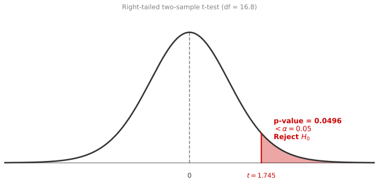
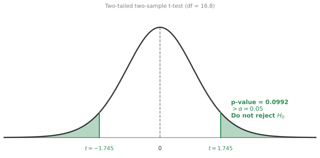
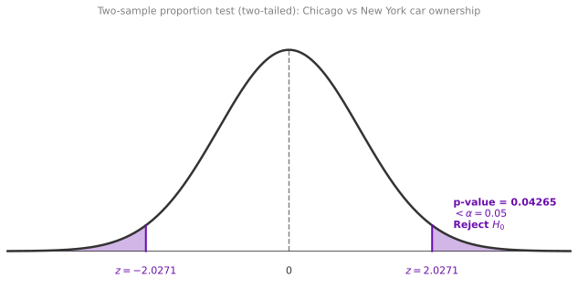
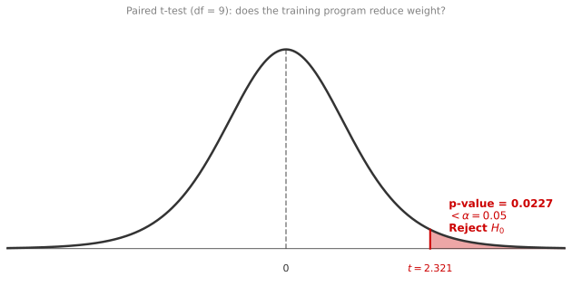
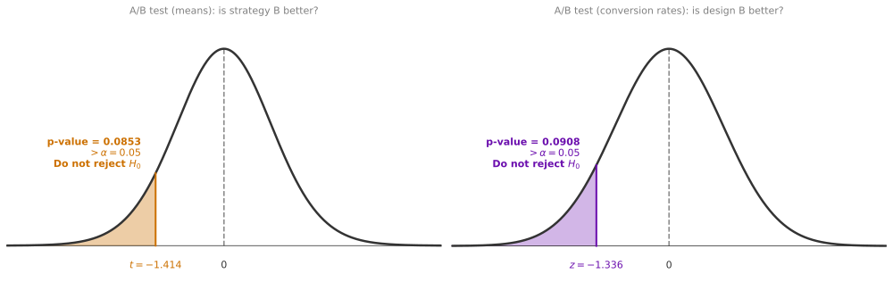
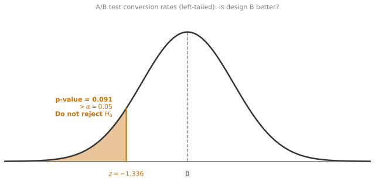

Comparing Two Populations
statistics
So far, all the hypothesis testing you have done involves a single sample from one population. But what happens when you want to compare two different…
So far, all the hypothesis testing you have done involves a single sample from one population. But what happens when you want to compare two different populations? For example, you believe that eighteen-year-olds in one country are taller than those in another, but you can only take samples from each. The two-sample t-test gives you a way to make that comparison rigorously.
Comparing Two Populations
Consider this example: you want to compare the heights of eighteen-year-olds in the US with the heights of eighteen-year-olds in Argentina. You collect independent samples from each country.
US sample (\(n_x = 10\)):
\[ 66.75, \; 70.24, \; 67.19, \; 67.09, \; 63.65, \; 64.64, \; 69.81, \; 69.79, \; 73.52, \; 71.74 \]
\[ \bar{x} = 68.442, \quad s_x = 3.113 \]
Argentina sample (\(n_y = 9\)):
\[ 71.16, \; 64.45, \; 66.00, \; 67.17, \; 63.45, \; 65.91, \; 65.90, \; 60.44, \; 69.06 \]
\[ \bar{y} = 65.949, \quad s_y = 3.106 \]
The US sample has a higher mean (68.442 vs 65.949), a difference of about 2.5 inches. But is that difference real, or could it just be the luck of which people you happened to measure? This is exactly the kind of question the two-sample t-test is designed to answer.
Hypotheses
Your goal is to determine if the population mean from the US (\(\mu_{\text{US}}\)) is different from the population mean from Argentina (\(\mu_{\text{AR}}\)). The null hypothesis is always that both population means are equal. Depending on the direction of your question, you get three possible tests:
\[ \text{Right-tailed:} \quad H_0: \mu_{\text{US}} - \mu_{\text{AR}} = 0 \quad \text{vs.} \quad H_1: \mu_{\text{US}} - \mu_{\text{AR}} > 0 \]
\[ \text{Left-tailed:} \quad H_0: \mu_{\text{US}} - \mu_{\text{AR}} = 0 \quad \text{vs.} \quad H_1: \mu_{\text{US}} - \mu_{\text{AR}} < 0 \]
\[ \text{Two-tailed:} \quad H_0: \mu_{\text{US}} - \mu_{\text{AR}} = 0 \quad \text{vs.} \quad H_1: \mu_{\text{US}} - \mu_{\text{AR}} \neq 0 \]
Assumptions
For the two-sample t-test to work, you need three things:
- Independent groups: All the people in the two samples are different. Nobody is measured in both groups.
- Independent observations: Each height measurement within a group is independent of the others.
- Normality: The heights in both countries follow a normal distribution.
Under these assumptions, the individual measurements are modeled as:
\[ X_i \overset{\text{i.i.d.}}{\sim} \mathcal{N}(\mu_{\text{US}}, \sigma_{\text{US}}^2) \qquad Y_j \overset{\text{i.i.d.}}{\sim} \mathcal{N}(\mu_{\text{AR}}, \sigma_{\text{AR}}^2) \]
Distribution of the Difference in Sample Means
You already know from the central limit theorem page that the sample mean of a normal population is also normal. Define the sample means for each group:
\[ \bar{X} = \frac{1}{10}\sum_{i=1}^{10} X_i \qquad \bar{Y} = \frac{1}{9}\sum_{j=1}^{9} Y_j \]
Since \(\bar{X}\) and \(\bar{Y}\) are each normally distributed and the two groups are independent of each other, their difference is also normal:
\[ \bar{X} - \bar{Y} \sim \mathcal{N}\left(\mu_{\text{US}} - \mu_{\text{AR}}, \; \frac{\sigma_{\text{US}}^2}{10} + \frac{\sigma_{\text{AR}}^2}{9}\right) \]
The mean of the difference is the difference of the population means (not the sample means). The variance of the difference is the sum of the individual variances of each sample mean, because independent variances add. If you do not quite remember why variances of independent variables add, you can revisit the central limit theorem page where this result was derived.
In the general case with sample sizes \(n_x\) and \(n_y\):
\[ \bar{X} - \bar{Y} \sim \mathcal{N}\left(\mu_{\text{US}} - \mu_{\text{AR}}, \; \frac{\sigma_{\text{US}}^2}{n_x} + \frac{\sigma_{\text{AR}}^2}{n_y}\right) \]
If you knew \(\sigma_{\text{US}}\) and \(\sigma_{\text{AR}}\), you could standardize this to get a standard normal:
\[ \frac{(\bar{X} - \bar{Y}) - (\mu_{\text{US}} - \mu_{\text{AR}})}{\sqrt{\sigma_{\text{US}}^2/10 + \sigma_{\text{AR}}^2/9}} \sim \mathcal{N}(0, 1) \]
But you do not know \(\sigma_{\text{US}}\) or \(\sigma_{\text{AR}}\). Just as with the one-sample t-test, the solution is to replace the unknown population standard deviations with their sample estimates \(s_x\) and \(s_y\). The resulting statistic follows a t-distribution instead of a normal:
\[ T = \frac{(\bar{X} - \bar{Y}) - (\mu_{\text{US}} - \mu_{\text{AR}})}{\sqrt{s_x^2/n_x + s_y^2/n_y}} \sim t_\nu \]
Under \(H_0\) (where \(\mu_{\text{US}} - \mu_{\text{AR}} = 0\)), this simplifies to:
\[ t = \frac{\bar{x} - \bar{y}}{\sqrt{s_x^2/n_x + s_y^2/n_y}} \]
Just like in the one-sample case, replacing the true \(\sigma\) values with estimates introduces extra uncertainty, so the test demands heavier tails (the t-distribution) to account for it.
Review Questions
1. In a hypothesis test comparing the heights of eighteen-year-olds in the US with those in Argentina, how does the difference between both sample means distribute?
- It follows a normal distribution with mean equal to the difference in sample means (\(\bar{x}_{\text{US}} - \bar{x}_{\text{AR}}\)) and standard deviation \(\sqrt{\sigma_{\text{US}}^2/n_{\text{US}} + \sigma_{\text{AR}}^2/n_{\text{AR}}}\).
- It follows a normal distribution with mean equal to the difference in population means (\(\mu_{\text{US}} - \mu_{\text{AR}}\)) and standard deviation \(\sqrt{\sigma_{\text{US}}^2/n_{\text{US}} + \sigma_{\text{AR}}^2/n_{\text{AR}}}\).
- It follows a uniform distribution within the range of possible differences between the two sample means.
TipAnswer
b. The difference \(\bar{X} - \bar{Y}\) is a random variable whose distribution is centered at the true population difference \(\mu_{\text{US}} - \mu_{\text{AR}}\) (not the observed sample difference, which is just one realization). The standard deviation comes from adding the variances of each sample mean. Option a is wrong because it uses sample means as the center of the theoretical distribution. Option c is wrong because a linear combination of normal random variables is always normal, never uniform.
Degrees of Freedom (Welch Approximation)
The degrees of freedom for the two-sample t-test are not as simple as \(n - 1\). Because you have two different sample sizes and two different variances, the formula (called the Welch approximation) is:
\[ \nu = \frac{\left(\frac{s_x^2}{n_x} + \frac{s_y^2}{n_y}\right)^2}{\frac{(s_x^2/n_x)^2}{n_x - 1} + \frac{(s_y^2/n_y)^2}{n_y - 1}} \]
You do not need to memorize this. Statistical software computes it automatically. The key idea is that it accounts for possibly different variances and sample sizes in the two groups, and it will generally not be an integer.
NotePlugging in the Numbers
\[ \nu = \frac{\left(\frac{3.113^2}{10} + \frac{3.106^2}{9}\right)^2}{\frac{(3.113^2/10)^2}{10 - 1} + \frac{(3.106^2/9)^2}{9 - 1}} = 16.8 \]
For this example, the degrees of freedom are \(\nu = 16.8\).
Right-Tailed Test
Let us test whether US eighteen-year-olds are taller than those in Argentina:
\[ H_0: \mu_{\text{US}} - \mu_{\text{AR}} = 0 \qquad H_1: \mu_{\text{US}} - \mu_{\text{AR}} > 0 \]
With \(\alpha = 0.05\), the observed t-statistic is:
\[ t = \frac{68.442 - 65.949}{\sqrt{3.113^2/10 + 3.106^2/9}} = \frac{2.493}{1.429} = 1.7450 \]
Under \(H_0\), this follows a t-distribution with 16.8 degrees of freedom. The p-value is:
\[ \text{p-value} = P\left(T > 1.7450 \;\middle|\; \mu_{\text{US}} - \mu_{\text{AR}} = 0\right) = 0.0495 \]
The p-value is 0.0495. Since \(0.0495 < 0.05\), you reject \(H_0\) and conclude that the population mean height in the US is greater than in Argentina. The evidence just barely crosses the threshold.
This is the exact opposite of what happened with the one-sample t-test on the previous page, where the same US data failed to reject \(H_0\). The difference is that here you are comparing two samples against each other rather than against a fixed historical value, and the effect size (2.5 inches between groups) is larger than the deviation from 66.7 (1.7 inches).
Two-Tailed Test
Now consider the two-tailed test: has the mean changed in either direction?
\[ H_0: \mu_{\text{US}} - \mu_{\text{AR}} = 0 \qquad H_1: \mu_{\text{US}} - \mu_{\text{AR}} \neq 0 \]
The t-statistic is the same (1.7450), but the p-value changes. You now want the probability that \(|T|\) exceeds 1.7450:
\[ \text{p-value} = P\left(|T| > 1.7450 \;\middle|\; \mu_{\text{US}} - \mu_{\text{AR}} = 0\right) = 0.0991 \]

The p-value is 0.0991. Since \(0.0991 > 0.05\), you do not have enough evidence to reject \(H_0\). You cannot conclude the means are different at the 5% level.
This is a case where the direction of the test matters. When you test specifically for “US is taller” (right-tailed), all the evidence budget goes in one direction and you barely reject. But when you test for “the means differ in either direction” (two-tailed), the significance is split across both tails and the same data is no longer enough.
Review Questions
2. In the US vs Argentina example, the right-tailed test rejects \(H_0\) (p = 0.0495) but the two-tailed test does not (p = 0.0991). Explain why.
TipAnswer
Both tests use the same t-statistic (1.7450), but they compute p-values differently. The right-tailed p-value is the area in one tail only (0.0495). The two-tailed p-value doubles this (0.0991) because it accounts for extreme values in both directions. Since \(\alpha = 0.05\) falls between these two values, only the right-tailed test rejects.
3. Why does the two-sample t-statistic use \(s_x\) and \(s_y\) rather than the population standard deviations?
TipAnswer
Because you do not know \(\sigma_{\text{US}}\) or \(\sigma_{\text{AR}}\). You only have samples from each population, so you estimate the population standard deviations with the sample standard deviations. This is the same reason the one-sample t-test uses \(s\) instead of \(\sigma\): the resulting statistic follows a t-distribution (not normal) to account for the estimation uncertainty.
4. The Welch degrees of freedom for this example is 16.8. Why is it not simply \(n_x + n_y - 2 = 17\)?
TipAnswer
The formula \(n_x + n_y - 2\) assumes both populations have equal variance (the “pooled” t-test). The Welch approximation does not make that assumption. It adjusts the degrees of freedom based on the actual sample variances and sizes. When variances and sample sizes are similar (as in this example), the Welch df is close to \(n_x + n_y - 2\), but when they differ substantially, the Welch df can be much smaller.
5. A study compares exam scores between two classes: Class A (\(n = 25\), \(\bar{x} = 78\), \(s = 8\)) and Class B (\(n = 30\), \(\bar{y} = 74\), \(s = 10\)). Compute the t-statistic for testing \(H_0: \mu_A = \mu_B\).
TipAnswer
\(t = \frac{78 - 74}{\sqrt{8^2/25 + 10^2/30}} = \frac{4}{\sqrt{2.56 + 3.33}} = \frac{4}{\sqrt{5.89}} = \frac{4}{2.43} = 1.65\). You would then compare this to a t-distribution with Welch degrees of freedom to get the p-value.
Two-Sample Test for Proportions
In the previous section, you compared means from two populations. But sometimes the quantity of interest is a proportion. For example: is the proportion of households that own a car different in Chicago compared to New York? This is a two-sample test for proportions, and it is one of the most common tools in A/B testing.
Car Ownership Example
Let \(p_1\) be the proportion of households that own a car in Chicago, and \(p_2\) the same proportion in New York. You want to test:
\[ H_0: p_1 = p_2 \qquad H_1: p_1 \neq p_2 \]
with \(\alpha = 0.05\).
You randomly sample \(n_1 = 100\) households from Chicago, of which \(x = 62\) own a car, and \(n_2 = 120\) households from New York, of which \(y = 58\) own a car. The sample proportions are:
\[ \hat{p}_1 = \frac{x}{n_1} = \frac{62}{100} = 0.62 \qquad \hat{p}_2 = \frac{y}{n_2} = \frac{58}{120} = 0.483 \]
Chicago appears to have a higher car ownership rate (\(0.62\) vs \(0.483\)). But is this difference statistically significant?
Building the Test Statistic
A natural estimate of the difference \(\Delta = p_1 - p_2\) is:
\[ \hat{\Delta} = \hat{p}_1 - \hat{p}_2 \]
To find the distribution of \(\hat{\Delta}\), note that if \(n_1\) and \(n_2\) are large enough, by the Central Limit Theorem:
\[ \hat{p}_1 \sim \mathcal{N}\left(p_1, \; \frac{p_1(1-p_1)}{n_1}\right) \qquad \hat{p}_2 \sim \mathcal{N}\left(p_2, \; \frac{p_2(1-p_2)}{n_2}\right) \]
Since the two samples are independent, the difference is also normal:
\[ \hat{\Delta} = \hat{p}_1 - \hat{p}_2 \sim \mathcal{N}\left(p_1 - p_2, \; \frac{p_1(1-p_1)}{n_1} + \frac{p_2(1-p_2)}{n_2}\right) \]
Now, if \(H_0\) is true, then \(p_1 = p_2 = p\) (some common but unknown value). This simplifies things considerably:
\[ \hat{\Delta} \sim \mathcal{N}\left(0, \; p(1-p)\left(\frac{1}{n_1} + \frac{1}{n_2}\right)\right) \]
Standardizing gives a z-statistic, but there is a problem: you do not know \(p\). The solution is to estimate it using the pooled sample proportion, which combines both samples:
\[ \hat{p} = \frac{x + y}{n_1 + n_2} = \frac{62 + 58}{100 + 120} = \frac{120}{220} = 0.5455 \]
This is a better estimate of the common \(p\) than either \(\hat{p}_1\) or \(\hat{p}_2\) alone, because it uses all the data from both groups.
Final Test Statistic
Replacing \(p\) with \(\hat{p}\) gives the test statistic:
\[ Z = \frac{\hat{p}_1 - \hat{p}_2}{\sqrt{\hat{p}(1-\hat{p})\left(\frac{1}{n_1} + \frac{1}{n_2}\right)}} \sim \mathcal{N}(0, 1) \]
Or equivalently (rearranging the denominator):
\[ Z = \frac{x/n_1 - y/n_2}{\sqrt{\frac{(x+y)\left(1 - \frac{x+y}{n_1+n_2}\right)}{n_1 \cdot n_2}}} \]
Computing the p-Value
With \(x = 62\), \(y = 58\), \(n_1 = 100\), \(n_2 = 120\):
\[ z = 2.0271 \]
Since this is a two-tailed test, the p-value is:
\[ \text{p-value} = P(|Z| > 2.0271) = 0.04265 \]

Since \(0.04265 < 0.05\), you reject \(H_0\) and conclude that the proportions of car ownership are different between Chicago and New York.
General Formula
In general, with two groups of sizes \(n_1\) and \(n_2\), where \(x\) individuals in group 1 and \(y\) individuals in group 2 belong to the category of interest:
\[ Z = \frac{x/n_1 - y/n_2}{\sqrt{\frac{(x+y)\left(1 - \frac{x+y}{n_1+n_2}\right)}{n_1 \cdot n_2}}} \sim \mathcal{N}(0, 1) \]
The p-value depends on the test type:
| Test type | Hypotheses | p-value |
|---|---|---|
| Right-tailed | \(H_0: p_1 - p_2 = 0\) vs. \(H_1: p_1 - p_2 > 0\) | \(P(Z > z)\) |
| Left-tailed | \(H_0: p_1 - p_2 = 0\) vs. \(H_1: p_1 - p_2 < 0\) | \(P(Z < z)\) |
| Two-tailed | \(H_0: p_1 - p_2 = 0\) vs. \(H_1: p_1 - p_2 \neq 0\) | \(P(|Z| > |z|)\) |
Conditions for Validity
- Independent samples: The two samples are drawn independently from each other.
- Large population: Each population is at least 20 times larger than its sample size.
- Binary outcomes: Individuals either belong to the category or they do not.
- Sufficient sample size: Both \(n_1 \geq 10\) and \(n_2 \geq 10\), so that the normal approximation to the binomial holds.
Review Questions
6. In the car ownership example, why do you use the pooled proportion \(\hat{p} = (x+y)/(n_1+n_2)\) instead of the individual \(\hat{p}_1\) and \(\hat{p}_2\) in the denominator?
TipAnswer
Under \(H_0\), both populations have the same proportion \(p\). If \(p_1 = p_2 = p\), then both samples come from populations with the same rate. Combining them into a single pooled estimate \(\hat{p}\) gives a more precise estimate of this common \(p\) than using either sample alone. This is analogous to how the one-sample proportion test uses \(p_0\) (from \(H_0\)) in the denominator.
7. A website runs an A/B test. Version A (\(n_1 = 500\)) has 45 conversions. Version B (\(n_2 = 500\)) has 60 conversions. Test whether the conversion rates differ at \(\alpha = 0.05\).
TipAnswer
\(\hat{p}_1 = 45/500 = 0.09\), \(\hat{p}_2 = 60/500 = 0.12\), \(\hat{p} = 105/1000 = 0.105\). The test statistic: \(z = \frac{0.09 - 0.12}{\sqrt{0.105 \times 0.895 \times (1/500 + 1/500)}} = \frac{-0.03}{\sqrt{0.105 \times 0.895 \times 0.004}} = \frac{-0.03}{0.01938} = -1.548\). The two-tailed p-value is \(P(|Z| > 1.548) = 0.1216\). Since \(0.1216 > 0.05\), you fail to reject \(H_0\). There is not enough evidence to conclude the conversion rates differ.
Paired t-Test
In the two-sample t-test, the two groups were independent: different people in each group, no connection between them. But there is another common situation where the two groups are not independent. The measurements come in pairs, where each pair is connected to the same individual or matched unit.
Weight Loss Example
Imagine you want to test whether a four-week training program is effective for weight loss. You measure the weight of 10 participants before the program (\(X_i\)) and then measure the same people again after the program (\(Y_i\)).
These are not independent groups. Person 1’s “before” measurement is directly connected to Person 1’s “after” measurement. If you treated them as independent samples, you would be ignoring valuable information: the fact that each person serves as their own control.
The key insight is that instead of comparing two groups, you can reduce this to a one-sample problem by looking at the differences:
\[ D_i = X_i - Y_i \quad \text{for } i = 1, 2, \ldots, 10 \]
Each \(D_i\) represents how much weight person \(i\) lost (positive means they lost weight, negative means they gained). Now you have a single sample of differences, and you want to test whether the average difference is positive.
Setting Up the Test
If both \(X\) and \(Y\) come from Gaussian populations, then \(D\) is also Gaussian. Specifically:
\[ D_i \overset{\text{i.i.d.}}{\sim} \mathcal{N}(\mu_D, \sigma_D^2) \]
Define the sample mean of the differences:
\[ \bar{D} = \frac{1}{n}\sum_{i=1}^{n} D_i \]
If you knew \(\sigma_D\), you could standardize \(\bar{D}\) to get a standard normal:
\[ \frac{\bar{D} - \mu_D}{\sigma_D / \sqrt{n}} \sim \mathcal{N}(0, 1) \]
But \(\sigma_D\) is unknown. So you estimate it with the sample standard deviation of the differences:
\[ s_D = \sqrt{\frac{\sum_{i=1}^{n}(D_i - \bar{D})^2}{n - 1}} \]
Replacing \(\sigma_D\) with \(s_D\) gives the t-statistic:
\[ T = \frac{\bar{D} - \mu_D}{s_D / \sqrt{n}} \sim t_{n-1} \]
Under \(H_0\) (the training program has no effect), \(\mu_D = 0\), so:
\[ t = \frac{\bar{D}}{s_D / \sqrt{n}} \sim t_{n-1} \]
This is exactly the one-sample t-test applied to the differences. All the results you learned on the t-tests page apply here directly.
Worked Example
You measure 10 participants before and after the program (weight in lbs):
Before (\(X_i\)): \(251.9, \; 166.9, \; 186.6, \; 201.4, \; 154.2, \; 185.4, \; 185.3, \; 116.2, \; 225.4, \; 209.0\)
After (\(Y_i\)): \(251.5, \; 165.6, \; 183.9, \; 200.3, \; 153.0, \; 186.7, \; 182.5, \; 114.3, \; 223.2, \; 210.4\)
Subtracting each pair gives the differences:
\(D_i = X_i - Y_i\): \(0.4, \; 1.3, \; 2.7, \; 1.1, \; 1.2, \; -1.3, \; 2.8, \; 1.9, \; 2.2, \; -1.4\)
Notice that most differences are positive (weight decreased), but two participants actually gained a little weight. The question is whether the overall average is significantly positive. From these differences:
\[ \bar{d} = 1.09, \quad s_D = 1.485, \quad n = 10 \]
You want to test whether the program helps people lose weight (positive differences on average):
\[ H_0: \mu_D = 0 \qquad H_1: \mu_D > 0 \]
with \(\alpha = 0.05\). The observed t-statistic:
\[ t = \frac{1.09}{1.485 / \sqrt{10}} = \frac{1.09}{0.4696} = 2.321 \]
Under \(H_0\), this follows a t-distribution with \(\nu = 9\) degrees of freedom. The p-value is:
\[ P(T > 2.321 \mid \mu_D = 0) = 0.0227 \]

Since \(0.0227 < 0.05\), you reject \(H_0\) and conclude that the training program is effective for weight loss. On average, participants lost weight.
Why Not Use a Two-Sample t-Test?
You might wonder: why not just treat the “before” measurements as one group and the “after” measurements as another group and run a two-sample t-test? The answer is that this would throw away information. The two-sample t-test assumes the groups are independent, but they are not. Each “after” value is paired with a “before” value from the same person.
By computing the differences \(D_i\), you eliminate person-to-person variability. Some people are naturally heavier than others, and that variation adds noise when comparing groups. But within each pair, that baseline variation cancels out. The paired test focuses on the change within each individual, which is a much cleaner signal.
Review Questions
8. A paired t-test gives \(\bar{d} = 1.09\), \(s_D = 1.485\), and \(n = 10\). If you were testing whether weight increased (\(H_1: \mu_D < 0\)), what would the p-value be?
TipAnswer
For a left-tailed test with \(t = 2.321\) (positive), the p-value is \(P(T < 2.321) = 1 - 0.0227 = 0.9773\). This is extremely large, so you would completely fail to reject \(H_0\). The data shows weight loss, not gain, so looking for an increase finds no evidence whatsoever.
9. Why does the paired t-test reduce to a one-sample t-test?
TipAnswer
Once you compute \(D_i = X_i - Y_i\) for each pair, you have a single sample of \(n\) values. Testing whether the mean difference is zero (\(H_0: \mu_D = 0\)) is exactly the same as a one-sample t-test on the \(D_i\) values with hypothesized mean 0. The pairing structure has been absorbed into the definition of \(D\).
10. An experiment measures blood pressure before and after a medication for 20 patients. Should you use a paired t-test or a two-sample t-test?
TipAnswer
A paired t-test. The same patients are measured twice (before and after), so the observations are not independent. Each “after” measurement is paired with the “before” measurement from the same patient. Using a two-sample t-test would incorrectly treat them as independent groups and waste the within-patient information.
11. A researcher selects 20 students and divides them into two groups. Each student takes an initial math assessment. Group A receives traditional teaching for four weeks, Group B receives a new method. Both groups take a post-assessment afterward. Within each group, is this a two-sample t-test or a paired t-test?
- Two-sample t-test
- Paired t-test
TipAnswer
b. The researcher is interested in comparing the individual changes in math skills within each group (pre vs post for the same student). Each student has a “before” score and an “after” score, making the observations paired. The appropriate test is a paired t-test applied within each group.
ML Application: A/B Testing
A/B testing is one of the most important real-world applications of the two-sample tests you have learned. It is used constantly in tech companies to make data-driven decisions about product changes. The statistical mechanics are exactly what you already know, but the context gives them practical meaning.
What is A/B Testing?
Suppose your company has a website and wants to test whether a new design (version B) leads to better outcomes than the current design (version A).
You cannot just switch to B and hope for the best. Instead, you run a controlled experiment:
- As customers arrive, randomly assign each one to see either version A or version B.
- Measure the outcome you care about (purchase amount, conversion rate, time on page, etc.).
- Use a statistical test to decide whether B is genuinely better than A, or whether the observed difference is just noise.
A common practice is to send a smaller proportion of customers to the new design (since you do not know if it is better or worse), and keep the majority on the safe, tested version.
Example 1: Comparing Purchase Amounts
You test two button placements on a shopping page. Strategy A (current) gets 80 customers, strategy B (new) gets 20 customers. You observe:
| Design A | Design B |
|---|---|
| Sample size: nA = 80 Mean purchase: x̄A = $50 Std deviation: sA = $10 |
Sample size: nB = 20 Mean purchase: x̄B = $55 Std deviation: sB = $15 |
Strategy B has a higher average purchase ($55 vs $50). Is this a real improvement or just random variation?
Hypotheses: You want to know if strategy B leads to higher purchases:
\[ H_0: \mu_A - \mu_B = 0 \qquad H_1: \mu_A - \mu_B < 0 \]
(This is a left-tailed test because you are testing whether A’s mean is less than B’s.)
Test: Assuming purchase amounts are approximately Gaussian, you use the two-sample t-test. The observed statistic:
\[ t = \frac{\bar{x}_A - \bar{x}_B}{\sqrt{s_A^2/n_A + s_B^2/n_B}} = \frac{50 - 55}{\sqrt{10^2/80 + 15^2/20}} = \frac{-5}{3.536} = -1.414 \]
The Welch degrees of freedom are 23.4. The p-value (left-tailed) is:
\[ P(T < -1.414 \mid H_0) = 0.085 \]

Since \(0.085 > 0.05\), you do not reject \(H_0\). There is not enough evidence to conclude that strategy B leads to higher purchases. The $5 difference could plausibly be noise.
Example 2: Comparing Conversion Rates
Now suppose you want to test whether a new website design (B) has a higher conversion rate (proportion of visitors who actually buy something). You assign 80 visitors to design A and 20 to design B:
| Design A | Design B | |
|---|---|---|
| Visitors | \(n_A = 80\) | \(n_B = 20\) |
| Conversions | \(x = 20\) | \(y = 8\) |
| Conversion rate | \(\hat{p}_A = 0.25\) | \(\hat{p}_B = 0.40\) |
Design B has a higher conversion rate (40% vs 25%). Is this significant?
Hypotheses: You want to test whether B’s conversion rate is higher:
\[ H_0: p_A - p_B = 0 \qquad H_1: p_A - p_B < 0 \]
Building the statistic: You are now comparing proportions, not means. The number of conversions in each group follows a binomial distribution: \(X \sim \text{Binomial}(n_A, p_A)\) and \(Y \sim \text{Binomial}(n_B, p_B)\). By the law of large numbers, \(X/n_A\) converges to \(p_A\) as the sample grows, and similarly for \(Y/n_B\). These are good estimates of the true conversion rates.
By the Central Limit Theorem, for large enough samples, both sample proportions are approximately normal:
\[ \frac{X}{n_A} \sim \mathcal{N}\left(p_A, \; \frac{p_A(1-p_A)}{n_A}\right) \qquad \frac{Y}{n_B} \sim \mathcal{N}\left(p_B, \; \frac{p_B(1-p_B)}{n_B}\right) \]
Since the two groups are independent, their difference is also normal:
\[ \frac{X}{n_A} - \frac{Y}{n_B} \sim \mathcal{N}\left(p_A - p_B, \; \frac{p_A(1-p_A)}{n_A} + \frac{p_B(1-p_B)}{n_B}\right) \]
Standardizing this gives a standard normal. But under \(H_0\), \(p_A = p_B = p\) (some unknown common value), which simplifies the variance. And since you do not know \(p\), you estimate it with the pooled proportion \(\hat{p} = (x + y)/(n_A + n_B)\), combining all conversions from both groups. This is the same logic you saw in the two-sample proportions section earlier.
Test: The pooled proportion is \(\hat{p} = (20 + 8)/(80 + 20) = 0.28\). The test statistic:
\[ z = \frac{x/n_A - y/n_B}{\sqrt{(x+y)(1 - \frac{x+y}{n_A+n_B})/(n_A \cdot n_B)}} = \frac{20/80 - 8/20}{\sqrt{28 \times (1 - 0.28)/(80 \times 20)}} = \frac{0.25 - 0.40}{0.1123} = -1.336 \]
The p-value (left-tailed):
\[ P(Z < -1.336) = 0.091 \]

Since \(0.091 > 0.05\), you do not reject \(H_0\). Despite the 15 percentage point difference in conversion rates, the sample sizes (especially \(n_B = 20\)) are too small to declare this statistically significant. You would need more data.
A/B Testing vs t-Tests
A/B testing is broader than just t-tests. It is a methodology for comparing two variations, while the t-test (or proportion test) is the statistical tool used in the final decision step.
flowchart LR
A([Propose variations A/B]) --> B[Randomly split sample]
B --> C["Measure outcomes for each group
and determine a metric"]
C --> D["Statistical analysis to
make a decision"]
E[<i>t-Test</i>] -.-> D
style E fill:none,stroke:#CC7000,color:#CC7000,font-style:italic
style D stroke:#4a6fa5,stroke-width:2.5px
The full A/B testing workflow includes:
- Propose the variation to test (new button, new layout, new algorithm)
- Randomly split visitors into control (A) and treatment (B) groups
- Measure outcomes for both groups
- Choose the right metric: means (use t-test), proportions (use z-test for proportions), or something else
- Apply the statistical test to make a data-driven decision
The key point is that A/B testing is not a new statistical concept. It is the practical application of the hypothesis testing framework you already know. The “A/B” part is about the experimental design (randomized controlled experiment). The decision-making part uses the same p-values, significance levels, and test statistics from the previous sections.
Review Questions
12. In the purchase amount example, why did you fail to reject \(H_0\) even though strategy B had a $5 higher mean?
TipAnswer
Because the sample size for group B was small (\(n_B = 20\)) and its standard deviation was high (\(s_B = 15\)). This makes the standard error large, which means the observed difference of $5 is within the range of normal random variation. With more data (larger \(n_B\)), the same $5 difference might become significant.
13. In the conversion rate example, the difference is 15 percentage points (40% vs 25%) but the test fails to reject. What would help?
TipAnswer
Increase the sample size, especially for group B. With only 20 visitors in group B, 8 conversions gives \(\hat{p}_B = 0.40\), but this estimate is very noisy. If you had 200 visitors in group B with 80 conversions (same 40% rate), the z-statistic would be much larger and you would likely reject \(H_0\).
14. A company runs an A/B test and finds p = 0.03. They immediately roll out the new design to all users. What important consideration might they be missing?
TipAnswer
Statistical significance does not guarantee practical significance. The effect might be real but tiny (like a 0.1% improvement in conversion). They should also consider: the effect size (is it worth the engineering cost?), whether the result replicates, and whether there are other metrics that might have been hurt by the change (e.g., increased conversions but lower average purchase amounts).
15. Which of the following scenarios should be analyzed as a two-sample t-test? (Select all that apply.)
- Investigating the impact of a new workout routine on participants’ weight by measuring their weights before and after the routine.
- Analyzing the average response time of individuals in a driving simulation before and after they undergo distraction training.
- Comparing the click-through rates of two independent groups of participants testing two different versions of a website homepage in an A/B testing environment.
- Comparing the test scores of two independent groups of students who received different teaching methods.
- Testing the effectiveness of a new drug by measuring the blood pressure of the same group of patients before and after treatment.
TipAnswer
c and d. A two-sample t-test requires two independent groups. Options a, b, and e involve the same people measured twice (before and after), making them paired t-test scenarios. Options c and d involve two separate groups of people who never overlap, making them appropriate for the independent two-sample framework. (Note: option c involves proportions rather than means, so technically it would use a two-sample proportion test rather than a t-test, but it is still a two-sample comparison of independent groups.)
Summary
| Concept | Description |
|---|---|
| Two-sample t-test | Compares means of two independent populations |
| t-test statistic | \(t = \frac{\bar{x} - \bar{y}}{\sqrt{s_x^2/n_x + s_y^2/n_y}}\) |
| Distribution under \(H_0\) (means) | Student’s t with Welch degrees of freedom |
| Welch df | Accounts for unequal variances and sample sizes; computed by software |
| Assumptions (means) | Independent groups, independent observations within groups, normality |
| Two-sample proportion test | Compares proportions of two independent populations |
| Proportion test statistic | \(Z = \frac{\hat{p}_1 - \hat{p}_2}{\sqrt{\hat{p}(1-\hat{p})(1/n_1 + 1/n_2)}}\) |
| Pooled proportion | \(\hat{p} = (x+y)/(n_1+n_2)\), best estimate of common \(p\) under \(H_0\) |
| Distribution under \(H_0\) (proportions) | Standard normal \(\mathcal{N}(0,1)\) |
| Assumptions (proportions) | Independent samples, large populations, binary outcomes, \(n_1, n_2 \geq 10\) |
| Paired t-test | Compares matched/paired observations by testing the mean difference |
| Paired t-statistic | \(t = \frac{\bar{D}}{s_D / \sqrt{n}} \sim t_{n-1}\) where \(D_i = X_i - Y_i\) |
| Key insight | Reduces to a one-sample t-test on the differences \(D_i\) |